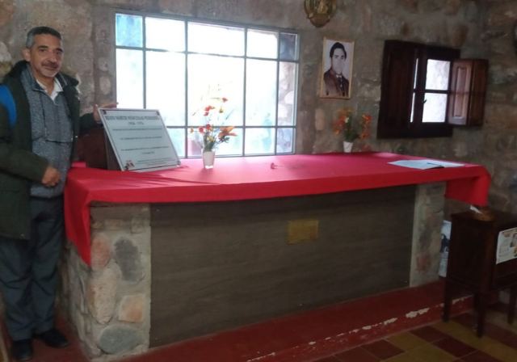
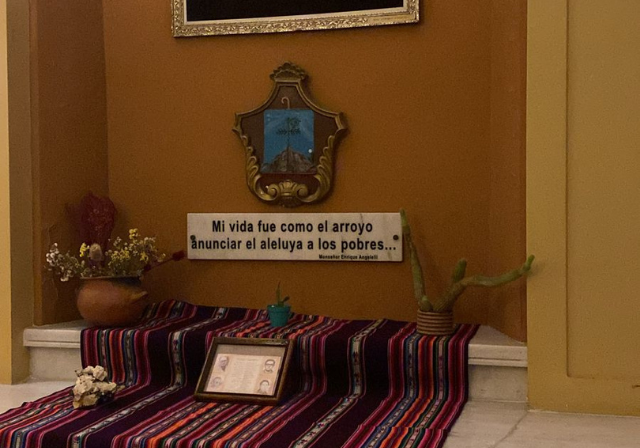
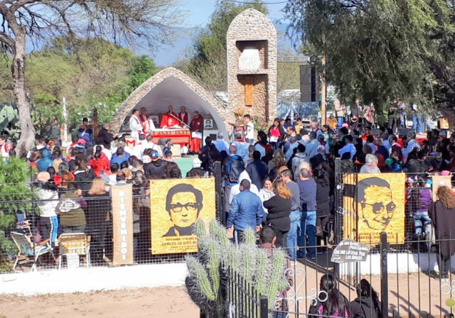

LUGARES DE PEREGRINACIÓN
Los lugares de peregrinación han sido designados para que los fieles puedan acercarse a ellos durante este tiempo de gracia que es el Año Jubilar, celebrado con motivo del 50.º aniversario del martirio de los Beatos Mártires Riojanos, y así obtener los frutos espirituales propios de esta celebración.
Quienes peregrinen a cualquiera de estos lugares sagrados con un sincero espíritu de conversión podrán recibir, conforme a las disposiciones de la Iglesia, la indulgencia jubilar, siempre que cumplan las condiciones habituales: confesión sacramental, comunión eucarística y oración por las intenciones del Sumo Pontífice.
Se establecen como templos jubilares y lugares de peregrinación:
- Iglesia Catedral San Nicolás de Bari, en la ciudad de La Rioja
- Parroquia El Salvador, en Chamical
- Ermita del Paraje del Buen Pastor, en Punta de los Llanos
- Iglesia del Sagrado Corazón de Jesús, en Sañogasta
- Gruta de los Mártires, en Bajo de Lucas (Parroquia de Chamical)





Catedral San Nicolás de Bari
La tumba de monseñor Enrique Angelelli se encuentra en la Catedral de La Rioja, en la ciudad capital de la provincia del mismo nombre, Argentina. Está ubicada en el interior del templo, hacia el costado izquierdo del altar mayor, en una sencilla cripta.
UbicaciónIglesia El Salvador
La tumba de los padres Carlos de Dios Murias y Gabriel Longueville se encuentra en la parroquia El Salvador, en la ciudad de Chamical, provincia de La Rioja, Argentina. En el interior del templo, sus restos reposan en una capilla lateral especialmente dedicada a su memoria, donde se conserva también un sencillo altar con objetos y símbolos de su vida misionera.
UbicaciónParaje Buen Pastor
La Ermita del Paraje Buen Pastor, en Punta de los Llanos, es un espacio de fe y memoria profundamente ligado a la historia del pueblo riojano. Allí pasa la ruta donde fue asesinado el beato Enrique Angelelli, convirtiendo el lugar en un ámbito de oración, recogimiento y compromiso, que invita a mantener viva la memoria de su entrega fiel al Evangelio y a la justicia.
Ubicación
Iglesia Sagrado Corazón
La tumba del beato Wenceslao Pedernera se encuentra en la Iglesia Sagrado Corazón de Sañogasta, un pequeño pueblo del departamento Chilecito, en la provincia de La Rioja, Argentina. Allí descansan sus restos en un espacio sencillo y muy cuidado por la comunidad local, que lo recuerda con profundo cariño y admiración.
UbicaciónBajo de Luca
Bajo de Lucas, ubicado en Chamical, es un lugar de profunda memoria y silencio orante. Allí fueron hallados los cuerpos de los beatos Carlos de Dios Murias y Gabriel Longueville, convirtiendo este sitio en un espacio de recogimiento, fe y compromiso con una Iglesia fiel al Evangelio y cercana a los pobres.
Ubicación